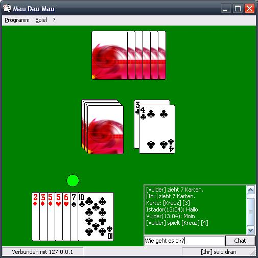

Mit anderen Spielern chatten

In der Spielverwaltung sowie während eines Spieles haben Sie die Möglichkeit, sich mit Ihren Mitspielern zu unterhalten.
Um sich mit Ihren Mitspielern zu unterhalten, geben Sie in das Eingabefenster eine Nachricht ein, und drücken Sie anschließend auf die Schaltfläche Chat.
Ihre Nachricht wird dann an alle Mitspieler übertragen.
Eingehende Nachrichten von Mitspielern können Sie in dem großen Textfeld, unten rechts im Fenster, lesen.
Die Nachrichten sind mit Namen des Absenders und Uhrzeit des Einganges markiert.